The computation of the full Lyapunov spectrum requires considerably more effort
than just the maximal exponent. An essential ingredient is some estimate of the
local Jacobians, i.e. of the linearized dynamics, which rules the growth of
infinitesimal perturbations. One either finds it from direct fits of local
linear models of the type 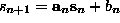, such that the first row
of the Jacobian is the vector 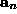, and 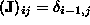 for
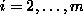, where m is the embedding dimension. The is given by
the least squares minimization 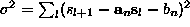
where 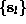 is the set of neighbors of  [45, 71]. Or
one constructs a global nonlinear model and computes its local Jacobians by
taking derivatives. In both cases, one multiplies the Jacobians one by one,
following the trajectory, to as many different vectors
[45, 71]. Or
one constructs a global nonlinear model and computes its local Jacobians by
taking derivatives. In both cases, one multiplies the Jacobians one by one,
following the trajectory, to as many different vectors  in tangent space
as one wants to compute Lyapunov exponents. Every few steps, one applies a
Gram-Schmidt orthonormalization procedure to the set of
in tangent space
as one wants to compute Lyapunov exponents. Every few steps, one applies a
Gram-Schmidt orthonormalization procedure to the set of  , and
accumulates the logarithms of their rescaling factors. Their average, in the
order of the Gram-Schmidt procedure, give the Lyapunov exponents in descending
order. The routine lyap_spec uses this method, which goes back to [71]
and [45], employing local linear fits. Apart from the problem of
spurious exponents, this method contains some other pitfalls: It assumes
that there exist well defined Jacobians, and does not test for their
relevance. In particular, when attractors are thin in the embedding space, some
(or all) of the local Jacobians might be estimated very badly. Then the whole
product can suffer from these bad estimates and the exponents are
correspondingly wrong. Thus the global nonlinear approach can be superior, if a
modeling has been successful, see Sec.
, and
accumulates the logarithms of their rescaling factors. Their average, in the
order of the Gram-Schmidt procedure, give the Lyapunov exponents in descending
order. The routine lyap_spec uses this method, which goes back to [71]
and [45], employing local linear fits. Apart from the problem of
spurious exponents, this method contains some other pitfalls: It assumes
that there exist well defined Jacobians, and does not test for their
relevance. In particular, when attractors are thin in the embedding space, some
(or all) of the local Jacobians might be estimated very badly. Then the whole
product can suffer from these bad estimates and the exponents are
correspondingly wrong. Thus the global nonlinear approach can be superior, if a
modeling has been successful, see Sec.  .
.
In Table  we show the exponents of the stroboscopic NMR
laser data in a three dimensional embedding as a function of the neighborhood
size. Using global nonlinear models, we find the numbers given in the last
two rows. More material is discussed in [2]. The spread of
values in the table for this rather clean data set reflects the difficulty of
estimating Lyapunov spectra from time series, which has to be done with great
care. In particular, when the algorithm is blindly applied to data from a
random process, it cannot internally check for the consistency of the
assumption of an underlying dynamical system. Therefore a Lyapunov spectrum is
computed which now is completely meaningless.
we show the exponents of the stroboscopic NMR
laser data in a three dimensional embedding as a function of the neighborhood
size. Using global nonlinear models, we find the numbers given in the last
two rows. More material is discussed in [2]. The spread of
values in the table for this rather clean data set reflects the difficulty of
estimating Lyapunov spectra from time series, which has to be done with great
care. In particular, when the algorithm is blindly applied to data from a
random process, it cannot internally check for the consistency of the
assumption of an underlying dynamical system. Therefore a Lyapunov spectrum is
computed which now is completely meaningless.
method 
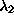 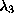 local linear k=20 0.32 -0.40 -1.13 `` k=40 0.30 -0.51 -1.21 `` k=160 0.28 -0.68 -1.31 radial basis functions 0.27 -0.64 -1.31 polynomial 0.27 -0.64 -1.15 Table: Lyapunov exponents of the NMR laser data, determined with a three-dimensional embedding. The algorithms described in Sec.
give 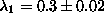 for the largest exponent.
The computation of the first part of the Lyapunov spectrum allows for some
interesting cross-checks. It was conjectured [72], and is found
to be correct in most physical situations, that the Lyapunov spectrum and the
fractal dimension of an attractor are closely related. If the expanding and
least contracting directions in space are continuously filled and only one
partial dimension is fractal, then one can ask for the dimensionality of a
(fractal) volume such that it is invariant, i.e. such that the sum of the
corresponding Lyapunov exponents vanishes, where the last one is weighted with
the non-integer part of the dimension:
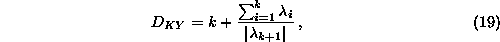
where k is the maximum integer such that the sum of the k largest exponents
is still non-negative. 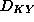 is conjectured to coincide with the information
dimension.
The Pesin identity is valid under the same assumptions and allows to compute
the KS-entropy:
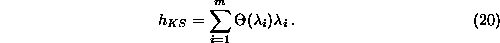